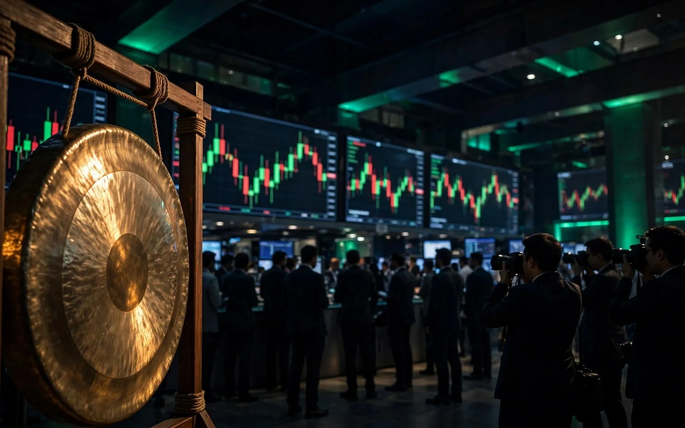

Blog · India focus
The Exchange Becomes the Trade: NSE's ₹4.5-Lakh-Crore Debut and What It Means for Traders

On Thursday, 24 September 2026, the loudest trade on Dalal Street had nothing to do with Nifty futures or expiry-day options. It was the listing of the marketplace itself. The National Stock Exchange — the venue where nearly three-quarters of India's options volume changes hands — debuted on its rival, the BSE, at ₹1,800 a share, against an issue price of ₹1,785.
The debut was muted rather than manic: a 0.84% listing premium, an intraday surge of more than 5% to ₹1,878, and a close at ₹1,818 — a 1.8% gain over the issue price for IPO investors. But the numbers around it were anything but modest. The ₹22,569-crore public issue is India's second-largest IPO ever, behind Hyundai Motor India's ₹27,870-crore offering in 2024 and ahead of LIC's ₹21,000-crore issue in 2022. Subscribed 5.71 times, it valued NSE at roughly ₹4.5 lakh crore, placing the exchange among India's ten most valuable listed companies — and, at intraday highs, among the world's ten largest listed exchanges by market value.
₹22,569 crore raised. 34 lakh new retail shareholders. A ₹4.5-lakh-crore valuation for the world's busiest derivatives exchange — listed, ironically, on the competitor's board.
A thirty-year overnight success
MD and CEO Ashish Kumar Chauhan — who began his career as part of NSE's founding team, spent a decade heading rival BSE, and returned to NSE in 2022 — called the listing the biggest honour of his 35-year career. His telling of the exchange's journey is worth remembering: NSE grew from handling around 700 trades in its earliest days to nearly 30 crore trades a day. Profitability, he said, has grown year after year, and "what is good for India is good for NSE."
The shareholding transformation is just as striking. Chauhan said over 34 lakh retail investors were allotted shares in the IPO, expanding NSE's investor family from roughly 2 lakh to 36 lakh. India's market infrastructure is now, in the most literal sense, owned by the public whose savings it intermediates.
What the listing tells traders about their own market
For active traders, the listing is more than a milestone to admire — it is a lens on where the market is heading. Three things matter.
First, the F&O cool-down is real — and probably over. SEBI's tightening over the past two years — larger contract sizes, fewer weekly expiries, higher margins, mandatory upfront premium collection — deliberately took heat out of options volumes. In a Reuters interview the day after the listing, Chauhan said the "impact on options volume is largely over": whatever volumes had to decline because of regulatory changes to cool down derivatives trading, and because of teething issues from the new closing auction session, have already declined. "Volumes are still high," he said, spread across instruments including large monthly options.
That matters for anyone trading weekly expiries. The structural shift — one weekly expiry per exchange, concentrated on the benchmark index (Nifty 50's share of NSE index-options turnover reached 93.1% in FY26) — is the new normal, not a passing phase. The business is consolidating around fewer, deeper contracts.
Second, the cash market is where the exchange wants growth. NSE handles about 93% of India's cash-market trading and nearly 75% of options, and Chauhan signalled that the exchange will help develop the cash market if regulation sets that objective — with SEBI deliberately raising derivatives costs while encouraging cash-market participation. Other growth avenues on the table include allowing foreign portfolio investors to trade bullion contracts to build the commodities business. For traders, the signal is plain: the era of ever-cheaper, ever-looser options speculation is being replaced by an era where the exchange's own strategy depends on deeper cash markets and cleaner derivative volumes.
Third, the listing exposes the strange governance of exchanges themselves. NSE listed on the BSE because SEBI decided in 2015 — after debating the question — that self-listing creates conflicts of interest, and exchanges must trade on rival bourses. On 25 September, NSE chairman Srinivas Injeti said the regulator should reconsider, pointing to markets like the United States where the NYSE's parent is listed on the exchange it operates. Whether SEBI reopens that debate matters to traders: the rules of the venue you trade on are set by institutions whose own incentives are now fully in the spotlight.
The BSE side of the story
NSE's debut also sharpens the picture of the exchange it listed on. BSE — once a fading incumbent — has spent the past five years clawing back share in index options and repositioning as a serious derivatives venue. The two exchanges now list each other's shares and compete for the same flow, with SEBI's F&O-end-price norms and the new closing auction session actively reshaping where and how that flow trades. In July, the BSE and NSE's cash and option-premium average daily turnovers fell 10.8% and 27.4% respectively, according to ICICI Securities — a reminder that regulatory redesign has costs for the venues too.
For retail traders this is healthy. Two strong, profitable, publicly scrutinised exchanges competing for your order flow means better technology, tighter oversight, and nowhere to hide for poor execution. The alternative — one dominant private venue — was never better for the people on the trading screen.
What to watch from here
With the listing done, traders should keep an eye on four things:
- The closing-auction consultation. SEBI has proposed changes to F&O settlement price methodology, including options for shorter auction transitions and tighter order rules. Expiry-day trading around the 3:20–3:30 pm window is where these changes bite hardest — that is where premium per minute runs highest.
- Whether volumes stabilise. Chauhan's claim that the volume impact is "largely over" will be tested quarter by quarter. Broker results — average daily orders, derivative turnover — are the early warning system.
- The self-listing debate. If SEBI reconsiders the 2015 decision, it would reshape exchange governance — and set a precedent watched by regulators well beyond India.
- Contract and cost structures. The single-weekly-expiry regime, larger contract sizes and transaction costs already wiped 4.4 lakh traders from net profitability last year, as SEBI's own F&O study showed. Know your all-in costs — the exchange now has shareholders to answer to, and they like revenue.
The listing ceremony ended with a gong strike on the BSE — the traditional bell for a most untraditional debut. India's markets have grown from 700 trades a day to 30 crore. The exchange that enabled that growth is now itself a stock to trade. Every trader in the country should understand the business of the venue they trade on — because its incentives are, from now on, printed on its own share price.
At Trading Expo India 2027, 23–24 April 2027, you can hear how professional traders read market structure, compare brokers' real cost structures side by side at the exhibition, and join conference sessions on derivatives regulation with the people who live it. New to the markets? Start with our 2026 beginner's guide and the story of India's demat boom first. Book your pass.
Frequently asked questions
When did NSE shares list and at what price?
NSE shares listed on the BSE on 24 September 2026 at ₹1,800, against an IPO issue price of ₹1,785 — a 0.84% premium. The stock closed the debut day at ₹1,818 and touched an intraday high of ₹1,878.
How big was the NSE IPO?
The ₹22,569-crore public issue is India's second-largest IPO, behind Hyundai Motor India's ₹27,870-crore offering in 2024 and ahead of LIC's ₹21,000-crore issue in 2022. It was subscribed 5.71 times, with over 34 lakh retail investors allotted shares.
Why did NSE list on the BSE instead of its own platform?
SEBI debated self-listing in 2015 but rejected it over conflicts of interest, requiring exchanges to list on rival bourses. On 25 September 2026, NSE chairman Srinivas Injeti said SEBI should reconsider, noting self-listing is permitted in markets such as the United States.
Meet the market in person.
Join 10,000+ visitors at Trading Expo India 2027, 23–24 April 2027. Early-bird passes from ₹249.